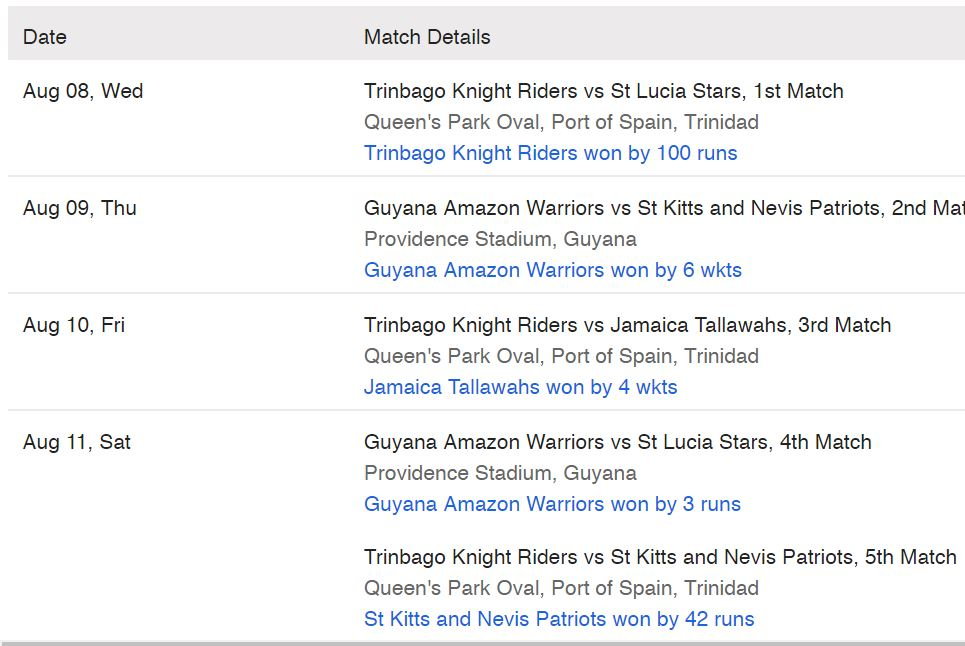
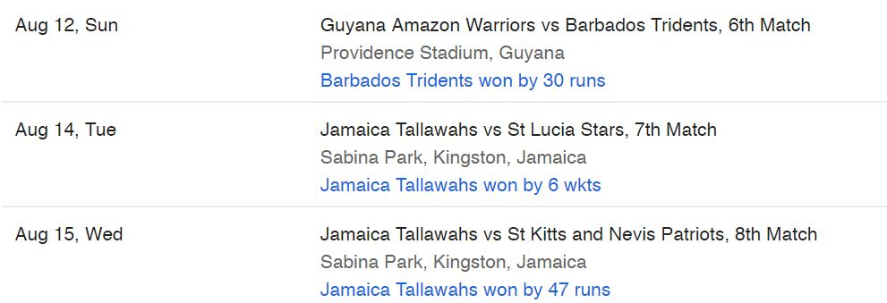

14 August
Jamaica Tallawahs vs St Lucia Stars
Sabina Park, Jamaica
15 August
Jamaica Tallawahs vs St Kitts & Nevis Patriots
Sabina Park, Jamaica
16 August
St Lucia Stars vs Trinbago Knight Riders
Darren Sammy National Cricket Stadium, St Lucia
17 August
St Lucia Stars vs Barbados Tridents
Darren Sammy National Cricket Stadium, St Lucia
18 August
Jamaica Tallawahs vs Guyana Amazon Warriors
Central Broward Stadium, Lauderhill, Florida
19 August
Jamaica Tallawahs vs Trinbago Knight Riders
Central Broward Stadium, Lauderhill, Florida
21 August
St Lucia Stars vs St Kitts & Nevis Patriots
Darren Sammy National Cricket Stadium, St Lucia
22 August
Jamaica Tallawahs vs Barbados Tridents
Central Broward Stadium, Lauderhill, Florida
24 August
St Lucia Stars vs Guyana Amazon Warriors
Darren Sammy National Cricket Stadium, St Lucia
25 August
Barbados Tridents vs St Kitts & Nevis Patriots
Kensington Oval, Barbados
25 August
St Lucia Stars vs Jamaica Tallawahs
Darren Sammy National Cricket Stadium, St Lucia
26 August
Barbados Tridents vs Trinbago Knight Riders
Kensington Oval, Barbados
28 August
St Kitts & Nevis Patriots vs Guyana Amazon Warriors
Warner Park, St Kitts
29 August
Barbados Tridents vs Jamaica Tallawahs
Kensington Oval, Barbados
30 August
St Kitts & Nevis Patriots vs St Lucia Stars
Warner Park, St Kitts
31 August
Barbados Tridents vs Guyana Amazon Warriors Kensington Oval, Barbados
01 September St Kitts & Nevis Patriots vs Trinbago Knight Riders
Warner Park, St Kitts
02 September
Barbados Tridents vs St Lucia Stars Kensington
Oval, Barbados
02 September
St Kitts & Nevis Patriots vs Jamaica Tallawahs
Warner Park, St Kitts
04 September
St Kitts & Nevis Patriots vs Barbados Tridents
Warner Park, St Kitts
05 September
Trinbago Knight Riders vs Guyana Amazon Warriors
Queen's Park Oval, Trinidad
07 September
Trinbago Knight Riders vs Barbados Tridents
Queen's Park Oval, Trinidad
08 September
Guyana Amazon Warriors vs Jamaica Tallawahs
Providence Stadium, Guyana
09 September
Guyana Amazon Warriors vs Trinbago Knight Riders
Providence Stadium, Guyana
11 September
Playoff 1 (1st vs 2nd)
Providence Stadium, Guyana
12 September
Playoff 2 (3rd vs 4th)
Providence Stadium, Guyana
14 September
Semi-final (Playoff 2 winner vs Playoff 1 loser)
Brian Lara Stadium, Trinidad
16 September
CPL 2018 Final
Brian Lara Stadium, Trinidad